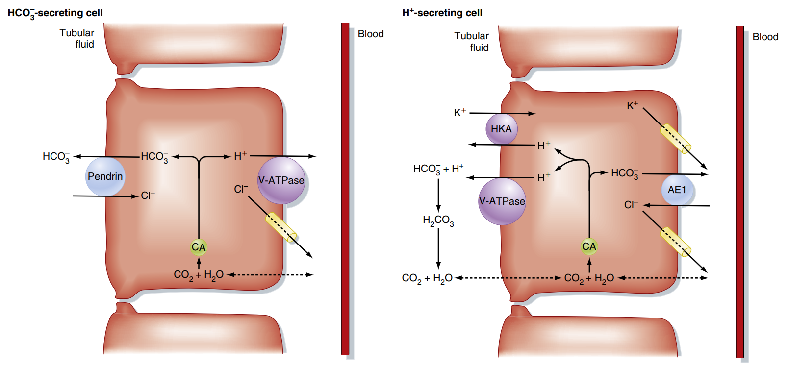
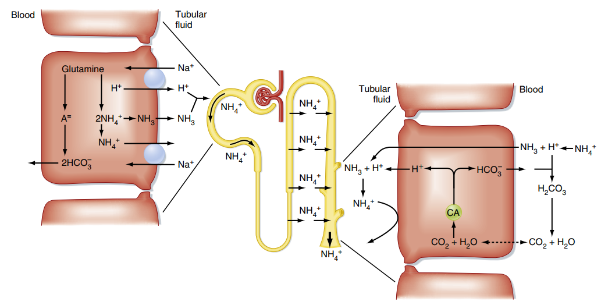
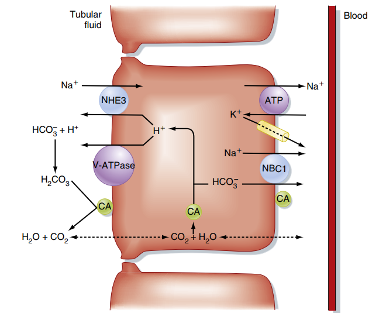
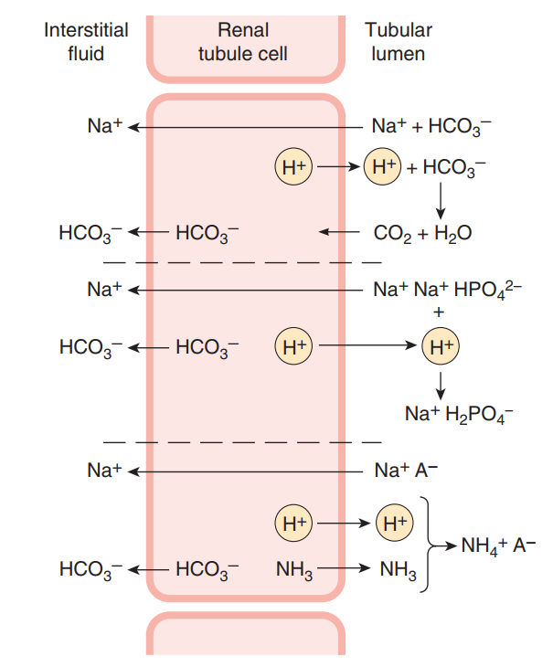

Sinh lý Thận: Điều hòa Thăng bằng Toan - Kiềm
Hệ thống hóa cơ chế bài tiết ion $H^+$, tái hấp thu $HCO_3^-$ và quá trình sản sinh bicarbonate mới nhằm duy trì hằng định pH dịch ngoại bào.
Thận đóng vai trò then chốt trong việc duy trì thăng bằng toan - kiềm của cơ thể bằng cách giữ cho nồng độ ion $H^+$ và $HCO_3^-$ trong dịch ngoại bào luôn ở mức hằng định. Hoạt động này được thực hiện thông qua hai nhiệm vụ chính: (1) Tái hấp thu gần như toàn bộ $HCO_3^-$ được lọc qua cầu thận để tránh mất chất đệm quan trọng này qua nước tiểu, và (2) Bài tiết một lượng acid cố định (acid không bay hơi) sinh ra từ chuyển hóa protid hằng ngày.
Phần I: Bài tiết ion $H^+$ và Tái hấp thu $HCO_3^-$
Để ngăn cản sự thất thoát $HCO_3^-$ (khoảng 4320 mmol/ngày được lọc qua cầu thận), các tế bào biểu mô ống thận thực hiện quá trình bài tiết ion $H^+$ vào lòng ống. Quá trình này diễn ra song song với việc đưa ion $HCO_3^-$ trở lại tuần hoàn, nhưng có sự khác biệt rõ rệt về cơ chế phân tử giữa các đoạn ống thận:
Chịu trách nhiệm cho 80% – 90% lượng $HCO_3^-$ được tái hấp thu.
• Bài tiết $H^+$: Theo cơ chế tích cực thứ phát ngược chiều với
$Na^+$ nhờ kênh NHE3 ở màng đỉnh, kết hợp với một bơm
$H^+$-ATPase chủ động.
• Xúc tác CA: Carbonic Anhydrase bờ bàn chải (CA
IV) thúc đẩy phân ly $H_2CO_3 \rightarrow H_2O + CO_2$ để khuếch
tán vào tế bào. Trong bào tương, CA II xúc tác phản ứng ngược
lại để tái tạo $H^+$ và $HCO_3^-$.
• Vận chuyển màng đáy: $HCO_3^-$ thoát ra dịch kẽ và máu qua
kênh đồng vận chuyển NBC1 ($Na^+-3HCO_3^-$).
Tái hấp thu nốt lượng $HCO_3^-$ còn lại và thực hiện bài xuất lượng acid dư thừa.
• Tế bào kẽ Alpha ($\alpha$-intercalated cells): Đảm nhiệm vai
trò chính.
• Bài tiết $H^+$ chủ động: Nhờ bơm
$H^+$-ATPase và bơm $H^+/K^+$-ATPase ở màng
đỉnh. Đây là cơ chế tích cực nguyên phát cực mạnh, có thể chống lại gradient
nồng độ $H^+$ gấp 1000 lần, cho phép pH nước tiểu giảm xuống giới hạn sinh lý
tối đa là 4.5.
• Vận chuyển màng đáy: $HCO_3^-$ mới được đưa vào máu nhờ kênh
trao đổi anion AE1 ($Cl^-/HCO_3^-$).
Quy trình tái hấp thu $HCO_3^-$ tại tế bào ống lượn gần:
-
Bước 1: Bài tiết H+ và kết hợp tại lòng ống Kênh NHE3 đẩy $H^+$ ra lòng ống đổi lấy $Na^+$. Tại đây, $H^+$ kết hợp với $HCO_3^-$ dịch lọc tạo thành $H_2CO_3$.
-
Bước 2: Phân ly và khuếch tán CO2 qua màng đỉnh Enzyme CA IV ở bờ bàn chải nhanh chóng phân hủy $H_2CO_3$ thành $CO_2$ và $H_2O$. Phân tử $CO_2$ dễ dàng khuếch tán qua màng lipid tế bào đi vào bào tương.
-
Bước 3: Tái tạo H+ và HCO3- nội bào Bên trong tế bào, enzyme CA II xúc tác phản ứng ngược: $CO_2 + H_2O \rightarrow H_2CO_3 \rightarrow H^+ + HCO_3^-$. Ion $H^+$ được tái sử dụng để bơm ra ngoài, còn $HCO_3^-$ được vận chuyển qua màng đáy bên nhờ kênh NBC1 để về máu tuần hoàn.
Phần II: Sự tạo thành Bicarbonate mới và Bài tiết Acid
Cơ thể liên tục sản sinh khoảng 50 - 80 mmol acid cố định (non-volatile acids như $H_2SO_4$, $H_3PO_4$) mỗi ngày từ chuyển hóa protein. Để trung hòa lượng acid này mà không làm cạn kiệt nguồn kiềm dự trữ, thận phải bài tiết ion $H^+$ dư thừa ra nước tiểu thông qua hai hệ đệm chính. Quá trình này giúp đưa các phân tử $HCO_3^-$ "mới" (không phải lượng $HCO_3^-$ được lọc ban đầu) vào dòng máu.
Chiếm khoảng 1/3 lượng acid bài xuất ròng của thận.
Hệ đệm chính là cặp phosphat acid/base ($HPO_4^{2-}/H_2PO_4^-$). Ion $H^+$ bài
tiết từ tế bào ống lượn xa và ống góp sẽ gắn kết với gốc phosphat kiềm
($HPO_4^{2-}$ - vốn đã được lọc qua cầu thận và không hấp thu hết) để tạo thành
gốc phosphat acid ($H_2PO_4^-$).
Dạng này bị khóa trong lòng ống và đào thải qua
nước tiểu dưới dạng "acid có thể chuẩn độ" (titratable acid).
Mỗi ion
$H^+$ đào thải theo cách này tương ứng với một phân tử $HCO_3^-$ mới được giải
phóng vào tuần hoàn mạch máu quanh ống.
Ngoài ra còn có cơ chế tổng hợp $NH_3$ trong tế bào ống góp và bài tiết
vào lòng ống để bẫy $H^+$ tạo thành $NH_4^+$. Đây là hệ đệm chính khi cơ
thể bị toan hóa kéo dài.
Chiếm khoảng 2/3 lượng acid bài xuất ròng, có khả năng tăng hoạt linh hoạt khi cơ thể bị toan hóa kéo dài.
Hệ thống đệm này hoạt động phức tạp trải dài qua nhiều đoạn nephron:
• Tại ống lượn gần: Axit amin Glutamine được
chuyển hóa bởi enzyme glutaminase sinh ra $2NH_4^+$ và $2HCO_3^-$. Ion
$HCO_3^-$ mới đi về máu, trong khi $NH_4^+$ được tiết vào lòng ống qua kênh đối
vận chuyển $Na^+/NH_4^+$.
• Quai Henle: $NH_4^+$ được tái hấp thu tích cực ở nhánh lên
dày (thay thế vị trí $K^+$ trên đồng vận chuyển $Na^+-K^+-2Cl^-$) và tích tụ
nồng độ cao ở kẽ tủy thận dưới dạng $NH_3$ và $NH_4^+$.
• Ống góp (Cơ chế bẫy khuếch tán): Xem chi tiết các bước dưới
đây.
Cơ chế bẫy khuếch tán Amoniac (Diffusion Trapping) tại ống góp:
-
Bước 1: Khuếch tán khí NH3 vào lòng ống góp Khí amoniac ($NH_3$) tích tụ ở vùng kẽ tủy thận khuếch tán thụ động vào lòng ống góp qua màng lipid của tế bào hoặc qua các kênh protein vận chuyển đặc hiệu glycoprotein Rhesus (RhBG và RhCG).
-
Bước 2: Bài tiết chủ động H+ từ tế bào kẽ Alpha Tế bào kẽ alpha bài tiết chủ động $H^+$ vào lòng ống góp thông qua các bơm $H^+$-ATPase. Quá trình này giúp giữ pH trong lòng ống góp ở mức acid.
-
Bước 3: Phản ứng bẫy ion (Ion trapping) Trong lòng ống góp, khí $NH_3$ lập tức kết hợp với ion $H^+$ tự do tạo thành ion amoni ($NH_4^+$). Vì màng tế bào biểu mô ống góp hoàn toàn không thấm đối với ion tích điện $NH_4^+$, chất này bị khóa chặt ("bẫy") trong dịch ống và buộc phải thải ra nước tiểu cùng ion $Cl^-$, hoàn tất quá trình đào thải acid ròng.
Phần III: Điều hòa hoạt động bài tiết ion $H^+$
Sự bài tiết ion $H^+$ và sản sinh $HCO_3^-$ của thận không cố định mà thay đổi linh hoạt dưới sự kiểm soát của các yếu tố nội môi, khí máu và nội tiết:
- Tình trạng toan hóa máu (Acidosis) Khi pH máu giảm hoặc $PCO_2$ tăng (toan hô hấp), nồng độ $H^+$ nội bào tăng kích thích trực tiếp hoạt động của bơm NHE3 và $H^+$-ATPase màng đỉnh. Đồng thời, toan hóa mạn tính kích thích biểu hiện gene enzyme glutaminase ở ống gần sau vài ngày, tăng vọt công suất bài xuất $NH_4^+$ gấp nhiều lần.
- Tình trạng kiềm hóa máu (Alkalosis) pH dịch ngoại bào tăng làm giảm nồng độ $H^+$ nội bào, ức chế bài tiết $H^+$ ở màng đỉnh. Đồng thời, các tế bào kẽ beta ($\beta$-intercalated cells) ở ống góp hoạt động ngược lại: chuyển bơm $H^+$-ATPase sang màng đáy bên để thải $HCO_3^-$ ra lòng ống qua kênh AE1 màng đỉnh.
-
Hệ nội tiết (Aldosterone, Angiotensin II,
Cortisol)
• Angiotensin II & Cortisol: Kích thích trực tiếp kênh NHE3 ở
ống lượn gần, tăng tái hấp thu $HCO_3^-$.
• Aldosterone: Kích thích trực tiếp bơm $H^+$-ATPase ở màng đỉnh của tế bào kẽ alpha ống góp và tăng hấp thu $Na^+$ qua kênh ENaC ở tế bào chính tạo điện thế âm lòng ống, gián tiếp thúc đẩy bài xuất $H^+$. -
Nồng độ Kali máu ($K^+$)
• Hạ kali máu: Thúc đẩy ion $K^+$ đi từ tế bào ra dịch ngoại
bào để bù đắp, đổi lại $H^+$ đi từ ngoài vào trong tế bào ống thận (shift tế
bào) $\rightarrow$ toan hóa nội bào kích thích bài xuất $H^+$, gây tình trạng
"nước tiểu acid nghịch thường".
• Tăng kali máu: Gây kiềm hóa nội bào tế bào ống thận $\rightarrow$ giảm bài tiết $H^+$ và giảm tổng hợp amoniac.
Phần IV: Sơ đồ minh họa cơ chế phân tử
Dưới đây là các sơ đồ minh họa chi tiết về cơ chế vận chuyển ion và hoạt động đệm tại hệ thống ống thận (nhấp chuột vào sơ đồ để kiểm tra chi tiết):




Phần V: Liên hệ Lâm sàng (High-Yield Clinical Correlation)
Bất kỳ sự rối loạn nào trong chuỗi cơ chế phân tử bài tiết acid và tái hấp thu kiềm tại thận đều dẫn đến các biến đổi toan kiềm nghiêm trọng trên lâm sàng:
🩺 1. Hội chứng Toan hóa ống thận (Renal Tubular Acidosis - RTA)
Là nhóm bệnh lý đặc trưng bởi tình trạng toan chuyển hóa có khoảng trống anion bình thường (normal anion gap metabolic acidosis - toan mất kiềm) do suy giảm chức năng bài tiết $H^+$ hoặc tái hấp thu $HCO_3^-$ của ống thận:
- RTA Type 1 (Distal RTA): Tổn thương cơ chế bài tiết proton của tế bào kẽ alpha ở ống góp (suy bơm $H^+$-ATPase hoặc rò rỉ màng). Thận không thể giảm pH nước tiểu xuống dưới 5.3 bất kể tình trạng toan máu. Gây mất $K^+$ máu nặng và tăng nguy cơ sỏi calci thận do phosphat calci lắng đọng trong môi trường nước tiểu kiềm.
- RTA Type 2 (Proximal RTA): Tổn thương cơ chế tái hấp thu $HCO_3^-$ ở ống lượn gần (giảm hoạt tính NHE3, NBC1 hoặc carbonic anhydrase). Thận làm rò rỉ lượng lớn kiềm ra nước tiểu cho tới khi nồng độ kiềm máu hạ xuống rất thấp mới đạt trạng thái cân bằng mới. Thường phối hợp trong hội chứng Fanconi.
- RTA Type 4 (Hyperkalemic RTA): Liên quan đến tình trạng thiếu hụt Aldosterone (suy thượng thận, bệnh thận đái tháo đường gây giảm renin) hoặc đề kháng aldosterone. Việc thiếu aldosterone làm giảm biểu hiện bơm $H^+$-ATPase ở tế bào kẽ alpha và giảm hấp thu $Na^+$ qua kênh ENaC ở tế bào chính $\rightarrow$ giảm bài tiết $H^+$ và $K^+$, gây toan máu đi kèm tăng kali máu đặc trưng.
🩺 2. Tác dụng của các thuốc lợi tiểu lên thăng bằng Toan - Kiềm
Cơ chế lọc và hấp thu ion tại các đoạn ống thận chịu sự chi phối mạnh của các nhóm thuốc lợi tiểu, tạo ra các rối loạn toan kiềm thứ phát:
- Thuốc ức chế Carbonic Anhydrase (Acetazolamide): Ức chế hoạt động của CA ở ống lượn gần $\rightarrow$ chặn đứng quá trình phân ly và tái hợp $HCO_3^-$. Thận tăng thải $HCO_3^-$ ra nước tiểu $\rightarrow$ gây toan chuyển hóa. Ứng dụng điều trị lợi tiểu nhẹ, giảm nhãn áp, hoặc điều hòa bù trừ kiềm hô hấp khi leo núi cao.
- Lợi tiểu quai (Furosemide) & Lợi tiểu Thiazide: Ức chế hấp thu $Na^+$ ở quai Henle và ống lượn xa $\rightarrow$ tăng tải lượng $Na^+$ và nước đi xuống ống góp. Tế bào chính ở ống góp tăng cường hấp thu $Na^+$ qua kênh ENaC tạo điện thế âm lòng ống $\rightarrow$ kích thích tế bào kẽ alpha bài tiết cực mạnh $H^+$ và tăng thải $K^+$ qua kênh ROMK $\rightarrow$ gây kiềm chuyển hóa mất nước hạ kali (hypokalemic contraction alkalosis).
Tài liệu tham khảo (AMA Citation Style)
- Mai PT, Đặng HAT, Lê QT, Vũ TTQ, Bùi DK. Sinh lý học y khoa. Nhà xuất bản Đại học Quốc gia Thành phố Hồ Chí Minh; 2024.
- Koeppen BM, Stanton BA. Berne and Levy Physiology. 8th ed. Elsevier; 2024.
- Silbernagl S, Despopoulos A. Color Atlas of Physiology. 6th ed. Thieme; 2009.
- Barrett KE, Barman SM, Boitano S, Brooks HL. Ganong's Review of Medical Physiology. 24th ed. McGraw-Hill Medical; 2012.